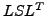
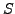
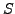

In this talk we look at the Cholesky factorizations in the limit of infinitesimal grids of finite difference discretizations of Elliptic PDEs. In particular, we show that the Schur complements of these operators have point-wise limits. This in turn allows us to consider new ways of constructing fast algorithms for these problems.
In particular, it can be shown that these operators can be written as an
 factorization, where  is lower triangular and  has
diagonal plus semiseparable structure. These ideas lead to new ways of
factorizing the underlying operator with better conditioning properties.
is lower triangular and  has
diagonal plus semiseparable structure. These ideas lead to new ways of
factorizing the underlying operator with better conditioning properties.